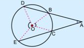

Explicacion
Al ∠A se le llama ángulo exterior ya que su vértice es un punto exterior a la circunferencia y sus lados son dos secantes. Su medida está dada por
Es decir, la medida de un ángulo exterior a una circunferencia es la semidiferencia de las medidas de los ángulos centrales correspondientes.

Ejemplo
Calcule el valor de x a partir de cada figura. En ambos casos se completan las figuras con los radios requeridos y se aplica la fórmula de la conclusión.

Ejercicio
Calcule el valor de x en cada inciso.